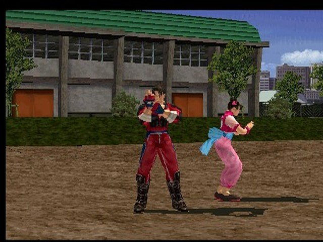
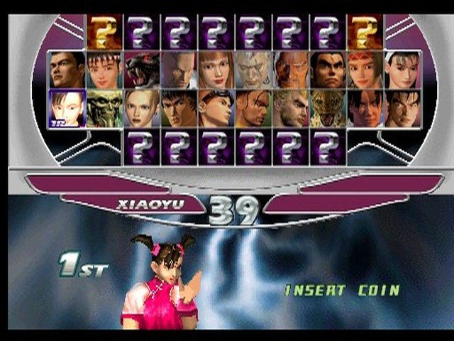
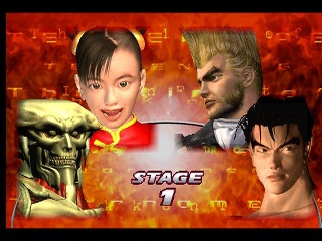
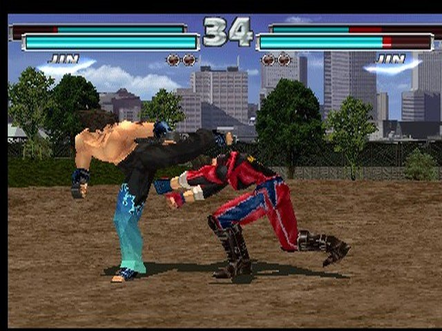
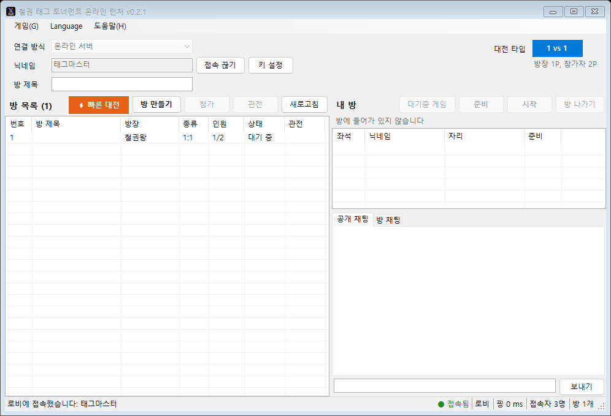

철권 태그 토너먼트 기판을 MAME로 그대로 돌리고, 넷코드는 롤백으로 다시 만들었습니다. 상대 회선이 늦어도 게임은 멈추지 않고, 게임 반응도 원래 기판보다 빨라졌습니다.
Windows 10/11 · 게임 롬(tektagt.zip)은 들어 있지 않습니다

버튼을 누른 프레임부터 내 캐릭터가 움직이기 시작하는 프레임까지 (넷플레이가 더하는 부분).
상대 입력이 늦으면 예측해서 계속 진행합니다. 회선 때문에 화면이 멈추지 않습니다.
예측이 틀리면 그 프레임으로 되감아, 소리와 화면 없이 다시 계산해 바로잡습니다.
게임이 입력을 한 프레임 일찍 읽고, 완성된 화면도 한 프레임 일찍 보여 줍니다. 5프레임 → 3프레임.



방 만들기, 빠른 대전, 관전, 채팅을 한 창에서.

| 1 | 왼손 | A |
| 2 | 오른손 | S |
| T | 태그 | L-Shift |
| 3 | 왼발 | Z |
| 4 | 오른발 | X |
| 이동 / 시작 | ← ↑ → ↓ 1 |
런처는 MAME 0.289의 tektagt 세트 하나만 씁니다. 롬은 배포하지 않으니 가지고 계신 롬을 쓰세요.
15개 파일의 CRC32
배포하지 않습니다. 가지고 계신 tektagt (MAME 0.289, 세계판 TEG2/VER.C1) 롬을 쓰세요. 런처가 15개 파일을 CRC로 확인합니다 (목록).
Windows 10/11. 예측이 틀리면 프레임을 다시 계산하므로 CPU가 빠를수록 부드럽습니다. PC가 버거우면 입력 지연을 자동으로 2프레임으로 올립니다.
내 입력 지연(1프레임)과 최근 가장 깊은 되감기(2프레임)입니다.
상대를 기다리는 동안 [대기중 게임]으로 혼자 할 수 있습니다.
압축 파일 하나에 런처, MAME(롤백 빌드), 넷플레이 스크립트가 들어 있습니다. 설치 없음.
TTTOnline.zip 다운로드다운로드는 곧 열립니다.